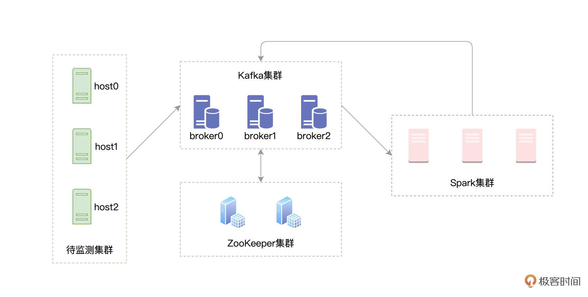
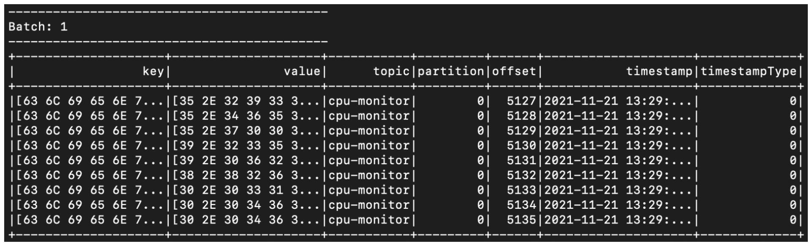

- 00 开篇词 入门Spark，你需要学会“三步走”.md.html
- 01 Spark：从“大数据的Hello World”开始.md.html
- 02 RDD与编程模型：延迟计算是怎么回事？.md.html
- 03 RDD常用算子（一）：RDD内部的数据转换.md.html
- 04 进程模型与分布式部署：分布式计算是怎么回事？.md.html
- 05 调度系统：如何把握分布式计算的精髓？.md.html
- 06 Shuffle管理：为什么Shuffle是性能瓶颈？.md.html
- 07 RDD常用算子（二）：Spark如何实现数据聚合？.md.html
- 08 内存管理：Spark如何使用内存？.md.html
- 09 RDD常用算子（三）：数据的准备、重分布与持久化.md.html
- 10 广播变量 & 累加器：共享变量是用来做什么的？.md.html
- 11 存储系统：数据到底都存哪儿了？.md.html
- 12 基础配置详解：哪些参数会影响应用程序稳定性？.md.html
- 13 Spark SQL：让我们从“小汽车摇号分析”开始.md.html
- 14 台前幕后：DataFrame与Spark SQL的由来.md.html
- 15 数据源与数据格式：DataFrame从何而来？.md.html
- 16 数据转换：如何在DataFrame之上做数据处理？.md.html
- 17 数据关联：不同的关联形式与实现机制该怎么选？.md.html
- 18 数据关联优化：都有哪些Join策略，开发者该如何取舍？.md.html
- 19 配置项详解：哪些参数会影响应用程序执行性能？.md.html
- 20 Hive + Spark强强联合：分布式数仓的不二之选.md.html
- 21 Spark UI（上）：如何高效地定位性能问题？.md.html
- 22 Spark UI（下）：如何高效地定位性能问题？.md.html
- 23 Spark MLlib：从“房价预测”开始.md.html
- 24 特征工程（上）：有哪些常用的特征处理函数？.md.html
- 25 特征工程（下）：有哪些常用的特征处理函数？.md.html
- 26 模型训练（上）：决策树系列算法详解.md.html
- 27 模型训练（中）：回归、分类和聚类算法详解.md.html
- 28 模型训练（下）：协同过滤与频繁项集算法详解.md.html
- 29 Spark MLlib Pipeline：高效开发机器学习应用.md.html
- 30 Structured Streaming：从“流动的Word Count”开始.md.html
- 31 新一代流处理框架：Batch mode和Continuous mode哪家强？.md.html
- 32 Window操作&Watermark：流处理引擎提供了哪些优秀机制？.md.html
- 33 流计算中的数据关联：流与流、流与批.md.html
- 34 Spark + Kafka：流计算中的“万金油”.md.html
- 用户故事 小王：保持空杯心态，不做井底之蛙.md.html
- 结束语 进入时间裂缝，持续学习.md.html
- 捐赠
34 Spark + Kafka：流计算中的“万金油”
你好，我是吴磊。
在前面的几讲中，咱们不止一次提到，就数据源来说，Kafka是Structured Streaming最重要的Source之一。在工业级的生产系统中，Kafka与Spark这对组合最为常见。因此，掌握Kafka与Spark的集成，对于想从事流计算方向的同学来说，是至关重要的。
今天这一讲，咱们就来结合实例，说一说Spark与Kafka这对“万金油”组合如何使用。随着业务飞速发展，各家公司的集群规模都是有增无减。在集群规模暴涨的情况下，资源利用率逐渐成为大家越来越关注的焦点。毕竟，不管是自建的Data center，还是公有云，每台机器都是真金白银的投入。
实例：资源利用率实时计算
咱们今天的实例，就和资源利用率的实时计算有关。具体来说，我们首先需要搜集集群中每台机器的资源（CPU、内存）利用率，并将其写入Kafka。然后，我们使用Spark的Structured Streaming来消费Kafka数据流，并对资源利用率数据做初步的分析与聚合。最后，再通过Structured Streaming，将聚合结果打印到Console、并写回到Kafka，如下图所示。
一般来说，在工业级应用中，上图中的每一个圆角矩形，在部署上都是独立的。绿色矩形代表待监测的服务器集群，蓝色矩形表示独立部署的Kafka集群，而红色的Spark集群，也是独立部署的。所谓独立部署，它指的是，集群之间不共享机器资源，如下图所示。

如果你手头上没有这样的部署环境，也不用担心。要完成资源利用率实时计算的实例，咱们不必非要依赖独立部署的分布式集群。实际上，仅在单机环境中，你就可以复现今天的实例。
课程安排
今天这一讲涉及的内容比较多，在正式开始课程之前，咱们不妨先梳理一下课程内容，让你做到心中有数。
对于上图的1、2、3、4这四个步骤，我们会结合代码实现，分别讲解如下这四个环节：
- 生成CPU与内存消耗数据流，写入Kafka；-
- Structured Streaming消费Kafka数据，并做初步聚合；-
- Structured Streaming将计算结果打印到终端；-
- Structured Streaming将计算结果写回Kafka，以备后用。
除此之外，为了照顾不熟悉Kafka的同学，咱们还会对Kafka的安装、Topic创建与消费、以及Kafka的基本概念，做一个简单的梳理。
速读Kafka的架构与运行机制
在完成前面交代的计算环节之前，我们需要了解Kafka都提供了哪些核心功能。
在大数据的流计算生态中，Kafka是应用最为广泛的消息中间件（Messaging Queue）。消息中间件的核心功能有以下三点。
- 连接消息生产者与消息消费者；-
- 缓存生产者生产的消息（或者说事件）；-
- 有能力让消费者以最低延迟访问到消息。
所谓消息生产者，它指的是事件或消息的来源与渠道。在我们的例子中，待监测集群就是生产者。集群中的机器，源源不断地生产资源利用率消息。相应地，消息的消费者，它指的是访问并处理消息的系统。显然，在这一讲的例子中，消费者是Spark。Structured Streaming读取并处理Kafka中的资源利用率消息，对其进行聚合、汇总。
经过前面的分析，我们不难发现，消息中间件的存在，让生产者与消费者这两个系统之间，天然地享有如下三方面的收益。
- 解耦：双方无需感知对方的存在，二者除了消息本身以外，再无交集；
- 异步：双方都可以按照自己的“节奏”和“步调”，来生产或是消费消息，而不必受制于对方的处理能力；
- 削峰：当消费者订阅了多个生产者的消息，且多个生产者同时生成大量消息时，得益于异步模式，消费者可以灵活地消费并处理消息，从而避免计算资源被撑爆的隐患。
好啦，了解了Kafka的核心功能与特性之后，接下来，我们说一说Kafka的系统架构。与大多数主从架构的大数据组件（如HDFS、YARN、Spark、Presto、Flink，等等）不同，Kafka为无主架构。也就是说，在Kafka集群中，没有Master这样一个角色来维护全局的数据状态。
集群中的每台Server被称为Kafka Broker，Broker的职责在于存储生产者生产的消息，并为消费者提供数据访问。Broker与Broker之间，都是相互独立的，彼此不存在任何的依赖关系。
如果就这么平铺直叙去介绍Kafka架构的话，难免让你昏昏欲睡，所以我们上图解。配合示意图解释Kafka中的关键概念，会更加直观易懂。
刚刚说过，Kafka为无主架构，它依赖ZooKeeper来存储并维护全局元信息。所谓元信息，它指的是消息在Kafka集群中的分布与状态。在逻辑上，消息隶属于一个又一个的Topic，也就是消息的话题或是主题。在上面的示意图中，蓝色圆角矩形所代表的消息，全部隶属于Topic A；而绿色圆角矩形，则隶属于Topic B。
而在资源利用率的实例中，我们会创建两个Topic，一个是CPU利用率cpu-monitor，另一个是内存利用率mem-monitor。生产者在向Kafka写入消息的时候，需要明确指明，消息隶属于哪一个Topic。比方说，关于CPU的监控数据，应当发往cpu-monitor，而对于内存的监控数据，则应该发往mem-monitor。
为了平衡不同Broker之间的工作负载，在物理上，同一个Topic中的消息，以分区、也就是Partition为粒度进行存储，示意图中的圆角矩形，代表的正是一个个数据分区。在Kafka中，一个分区，实际上就是磁盘上的一个文件目录。而消息，则依序存储在分区目录的文件中。
为了提供数据访问的高可用（HA，High Availability），在生产者把消息写入主分区（Leader）之后，Kafka会把消息同步到多个分区副本（Follower），示意图中的步骤1与步骤2演示了这个过程。
一般来说，消费者默认会从主分区拉取并消费数据，如图中的步骤3所示。而当主分区出现故障、导致数据不可用时，Kafka就会从剩余的分区副本中，选拔出一个新的主分区来对外提供服务，这个过程，又称作“选主”。
好啦，到此为止，Kafka的基础功能和运行机制我们就讲完了，尽管这些介绍不足以覆盖Kafka的全貌，但是，对于初学者来说，这些概念足以帮我们进军实战，做好Kafka与Spark的集成。
Kafka与Spark集成
接下来，咱们就来围绕着“资源利用率实时计算”这个例子，手把手地带你实现Kafka与Spark的集成过程。首先，第一步，我们先来准备Kafka环境。
Kafka环境准备
要配置Kafka环境，我们只需要简单的三个步骤即可：
- 安装ZooKeeper、安装Kafka，启动ZooKeeper；-
- 修改Kafka配置文件server.properties，设置ZooKeeper相关配置项；-
- 启动Kafka，创建Topic。
首先，咱们从 ZooKeeper官网与 Kafka官网，分别下载二者的安装包。然后，依次解压安装包、并配置相关环境变量即可，如下表所示。
// 下载ZooKeeper安装包
wget https://archive.apache.org/dist/zookeeper/zookeeper-3.7.0/apache-zookeeper-3.7.0-bin.tar.gz
// 下载Kafka安装包
wget https://archive.apache.org/dist/kafka/2.8.0/kafka_2.12-2.8.0.tgz
// 把ZooKeeper解压并安装到指定目录
tar -zxvf apache-zookeeper-3.7.0-bin.tar.gz -C /opt/zookeeper
// 把Kafka解压并安装到指定目录
tar -zxvf kafka_2.12-2.8.0.tgz -C /opt/kafka
// 编辑环境变量
vi ~/.bash_profile
/** 输入如下内容到文件中
export ZOOKEEPER_HOME=/opt/zookeeper/apache-zookeeper-3.7.0-bin
export KAFKA_HOME=/opt/kafka/kafka_2.12-2.8.0
export PATH=$PATH:$ZOOKEEPER_HOME/bin:$KAFKA_HOME/bin
*/
// 启动ZooKeeper
zkServer.sh start
接下来，我们打开Kafka配置目录下（也即$KAFKA_HOME/config）的server.properties文件，将其中的配置项zookeeper.connect，设置为“hostname:2181”，也就是主机名加端口号。
如果你把ZooKeeper和Kafka安装到同一个节点，那么hostname可以写localhost。而如果是分布式部署，hostname要写ZooKeeper所在的安装节点。一般来说，ZooKeeper默认使用2181端口来提供服务，这里我们使用默认端口即可。
配置文件设置完毕之后，我们就可以使用如下命令，在多个节点启动Kafka Broker。
kafka-server-start.sh -daemon $KAFKA_HOME/config/server.properties
Kafka启动之后，咱们就来创建刚刚提到的两个Topic：cpu-monitor和mem-monitor，它们分别用来存储CPU利用率消息与内存利用率消息。
kafka-topics.sh --zookeeper hostname:2181/kafka --create
--topic cpu-monitor
--replication-factor 3
--partitions 1
kafka-topics.sh --zookeeper hostname:2181/kafka --create
--topic mem-monitor
--replication-factor 3
--partitions 1
怎么样？是不是很简单？要创建Topic，只要指定ZooKeeper服务地址、Topic名字和副本数量即可。不过，这里需要特别注意的是，副本数量，也就是replication-factor，不能超过集群中的Broker数量。所以，如果你是本地部署的话，也就是所有服务都部署到一台节点，那么这里的replication-factor应该设置为1。
好啦，到此为止，Kafka环境安装、配置完毕。下一步，我们就该让生产者去生产资源利用率消息，并把消息源源不断地注入Kafka集群了。
消息的生产
在咱们的实例中，我们要做的是监测集群中每台机器的资源利用率。因此，我们需要这些机器，每隔一段时间，就把CPU和内存利用率发送出来。而要做到这一点，咱们只需要完成一下两个两个必要步骤：
每台节点从本机收集CPU与内存使用数据；-
把收集到的数据，按照固定间隔，发送给Kafka集群。- 由于消息生产这部分代码比较长，而我们的重点是学习Kafka与Spark的集成，因此，这里咱们只给出这两个步骤所涉及的关键代码片段。完整的代码实现，你可以从这里进行下载。
import java.lang.management.ManagementFactory import java.lang.reflect.Modifier
def getUsage(mothedName: String): Any = { // 获取操作系统Java Bean val operatingSystemMXBean = ManagementFactory.getOperatingSystemMXBean // 获取操作系统对象中声明过的方法
for (method <- operatingSystemMXBean.getClass.getDeclaredMethods) { method.setAccessible(true)// 判断是否为我们需要的方法名
if (method.getName.startsWith(mothedName) && Modifier.isPublic(method.getModifiers)) {// 调用并执行方法，获取指定资源（CPU或内存）的利用率
return method.invoke(operatingSystemMXBean) } } throw new Exception(s"Can not reflect method: ${mothedName}")}
// 获取CPU利用率 def getCPUUsage(): String = {
var usage = 0.0try{ // 调用getUsage方法，传入”getSystemCpuLoad”参数，获取CPU利用率
usage = getUsage("getSystemCpuLoad").asInstanceOf[Double] * 100 } catch { case e: Exception => throw e } usage.toString}
// 获取内存利用率 def getMemoryUsage(): String = {
var freeMemory = 0L var totalMemory = 0L var usage = 0.0try{ // 调用getUsage方法，传入相关内存参数，获取内存利用率
freeMemory = getUsage("getFreePhysicalMemorySize").asInstanceOf[Long] totalMemory = getUsage("getTotalPhysicalMemorySize").asInstanceOf[Long]// 用总内存，减去空闲内存，获取当前内存用量
usage = (totalMemory - freeMemory.doubleValue) / totalMemory * 100 } catch { case e: Exception => throw e } usage.toString}
利用Java的反射机制，获取资源利用率
上面的代码，用来获取CPU与内存利用率。在这段代码中，最核心的部分是利用Java的反射机制，来获取操作系统对象的各个公有方法，然后通过调用这些公有方法，来完成资源利用率的获取。
不过，看到这你可能会说：“我并不了解Java的反射机制，上面的代码看不太懂。”这也没关系，只要你能结合注释，把上述代码的计算逻辑搞清楚即可。获取到资源利用率的数据之后，接下来，我们就可以把它们发送给Kafka了。
import org.apache.kafka.clients.producer.{Callback, KafkaProducer, ProducerConfig, ProducerRecord}
import org.apache.kafka.common.serialization.StringSerializer
// 初始化属性信息
def initConfig(clientID: String): Properties = {
val props = new Properties
val brokerList = "localhost:9092"
// 指定Kafka集群Broker列表
props.put(ProducerConfig.BOOTSTRAP_SERVERS_CONFIG, brokerList)
props.put(ProducerConfig.KEY_SERIALIZER_CLASS_CONFIG, classOf[StringSerializer].getName)
props.put(ProducerConfig.VALUE_SERIALIZER_CLASS_CONFIG, classOf[StringSerializer].getName)
props.put(ProducerConfig.CLIENT_ID_CONFIG, clientID)
props
}
val clientID = "usage.monitor.client"
val cpuTopic = "cpu-monitor"
val memTopic = "mem-monitor"
// 定义属性，其中包括Kafka集群信息、序列化方法，等等
val props = initConfig(clientID)
// 定义Kafka Producer对象，用于发送消息
val producer = new KafkaProducer[String, String](props)
// 回调函数，可暂时忽略
val usageCallback = _
while (true) {
var cpuUsage = new String
var memoryUsage = new String
// 调用之前定义的函数，获取CPU、内存利用率
cpuUsage = getCPUUsage()
memoryUsage = getMemoryUsage()
// 为CPU Topic生成Kafka消息
val cpuRecord = new ProducerRecord[String, String](cpuTopic, clientID, cpuUsage)
// 为Memory Topic生成Kafka消息
val memRecord = new ProducerRecord[String, String](memTopic, clientID, memoryUsage)
// 向Kafka集群发送CPU利用率消息
producer.send(cpuRecord, usageCallback)
// 向Kafka集群发送内存利用率消息
producer.send(memRecord, usageCallback)
// 设置发送间隔：2秒
Thread.sleep(2000)
}
从上面的代码中，我们不难发现，其中的关键步骤有三步：
- 定义Kafka Producer对象，其中需要我们在属性信息中，指明Kafka集群相关信息；
- 调用之前定义的函数getCPUUsage、getMemoryUsage，获取CPU与内存资源利用率；
- 把资源利用率封装为消息，并发送给对应的Topic。- 好啦，到此为止，生产端的事情，我们就全部做完啦。在待监测的集群中，每隔两秒钟，每台机器都会向Kafka集群的cpu-monitor和mem-monitor这两个Topic发送即时消息。Kafka接收到这些消息之后，会把它们落盘到相应的分区中，等待着下游（也就是Spark）的消费。
消息的消费
接下来，终于要轮到Structured Streaming闪亮登场了。在流计算模块的[第一讲]，我们就提到，Structured Streaming支持多种Source（Socket、File、Kafka），而在这些Source中，Kafka的应用最为广泛。在用法上，相比其他Source，从Kafka接收并消费数据并没有什么两样，咱们依然是依赖“万能”的readStream API，如下表所示。
import org.apache.spark.sql.DataFrame
// 依然是依赖readStream API
val dfCPU:DataFrame = spark.readStream
// format要明确指定Kafka
.format("kafka")
// 指定Kafka集群Broker地址，多个Broker用逗号隔开
.option("kafka.bootstrap.servers", "hostname1:9092,hostname2:9092,hostname3:9092")
// 订阅相关的Topic，这里以cpu-monitor为例
.option("subscribe", "cpu-monitor")
.load()
对于readStream API的用法，想必你早已烂熟于心了，上面的代码，你应该会觉得看上去很眼熟。这里需要我们特别注意的，主要有三点：
- format中需要明确指定Kafka；
- 为kafka.bootstrap.servers键值指定Kafka集群Broker，多个Broker之间以逗号分隔；
- 为subscribe键值指定需要消费的Topic名，明确Structured Streaming要消费的Topic。
挥完上面的“三板斧”之后，我们就得到了用于承载CPU利用率消息的DataFrame。有了DataFrame，我们就可以利用Spark SQL提供的能力，去做各式各样的数据处理。再者，结合Structured Streaming框架特有的Window和Watermark机制，我们还能以时间窗口为粒度做计数统计，同时决定“多迟”的消息，我们将不再处理。
不过，在此之前，咱们不妨先来直观看下代码，感受一下存在Kafka中的消息长什么样子。
import org.apache.spark.sql.streaming.{OutputMode, Trigger}
import scala.concurrent.duration._
dfCPU.writeStream
.outputMode("Complete")
// 以Console为Sink
.format("console")
// 每10秒钟，触发一次Micro-batch
.trigger(Trigger.ProcessingTime(10.seconds))
.start()
.awaitTermination()
利用上述代码，通过终端，我们可以直接观察到Structured Streaming获取的Kafka消息，从而对亟待处理的消息，建立一个感性的认知，如下图所示。

在上面的数据中，除了Key、Value以外，其他信息都是消息的元信息，也即消息所属Topic、所在分区、消息的偏移地址、录入Kafka的时间，等等。
在咱们的实例中，Key对应的是发送资源利用率数据的服务器节点，而Value则是具体的CPU或是内存利用率。初步熟悉了消息的Schema与构成之后，接下来，咱们就可以有的放矢地去处理这些实时的数据流了。
对于这些每两秒钟就产生的资源利用率数据，假设我们仅关心它们在一定时间内（比如10秒钟）的平均值，那么，我们就可以结合Trigger与聚合计算来做到这一点，代码如下所示。
import org.apache.spark.sql.types.StringType
dfCPU
.withColumn("clientName", $"key".cast(StringType))
.withColumn("cpuUsage", $"value".cast(StringType))
// 按照服务器做分组
.groupBy($"clientName")
// 求取均值
.agg(avg($"cpuUsage").cast(StringType).alias("avgCPUUsage"))
.writeStream
.outputMode("Complete")
// 以Console为Sink
.format("console")
// 每10秒触发一次Micro-batch
.trigger(Trigger.ProcessingTime(10.seconds))
.start()
.awaitTermination()
可以看到，我们利用Fixed interval trigger，每隔10秒创建一个Micro-batch。然后，在一个Micro-batch中，我们按照发送消息的服务器做分组，并计算CPU利用率平均值。最后将统计结果打印到终端，如下图所示。

再次写入Kafka
实际上，除了把结果打印到终端外，我们还可以把它写回Kafka。我们知道Structured Streaming支持种类丰富的Sink，除了常用于测试的Console以外，还支持File、Kafka、Foreach(Batch)，等等。要把数据写回Kafka也不难，我们只需在writeStream API中，指定format为Kafka并设置相关选项即可，如下表所示。
dfCPU
.withColumn("key", $"key".cast(StringType))
.withColumn("value", $"value".cast(StringType))
.groupBy($"key")
.agg(avg($"value").cast(StringType).alias("value"))
.writeStream
.outputMode("Complete")
// 指定Sink为Kafka
.format("kafka")
// 设置Kafka集群信息，本例中只有localhost一个Kafka Broker
.option("kafka.bootstrap.servers", "localhost:9092")
// 指定待写入的Kafka Topic，需事先创建好Topic：cpu-monitor-agg-result
.option("topic", "cpu-monitor-agg-result")
// 指定WAL Checkpoint目录地址
.option("checkpointLocation", "/tmp/checkpoint")
.trigger(Trigger.ProcessingTime(10.seconds))
.start()
.awaitTermination()
我们首先指定Sink为Kafka，然后通过option选项，分别设置Kafka集群信息、待写入的Topic名字，以及WAL Checkpoint目录。将上述代码敲入spark-shell，Structured Streaming会每隔10秒钟，就从Kafka拉取原始的利用率信息（Topic：cpu-monitor），然后按照服务器做分组聚合，最终再把聚合结果写回到Kafka（Topic：cpu-monitor-agg-result）。
这里有两点需要特别注意，一个是读取与写入的Topic要分开，以免造成逻辑与数据上的混乱。再者，细心的你可能已经发现，写回Kafka的数据，在Schema上必须用“key”和“value”这两个固定的字段，而不能再像写入Console时，可以灵活地定义类似于“clientName”和“avgCPUUsage”这样的字段名，关于这一点，还需要你特别关注。
重点回顾
好啦，到此为止，我手把手地带你实现了Kafka与Spark的集成，完成了图中涉及的每一个环节，也即从消息的生产、到写入Kafka，再到消息的消费与处理，并最终写回Kafka。
今天的内容比较多，你除了需要掌握集成中的每一个环节与用法外，还需要了解一些有关Kafka的基本概念与特性。Kafka是应用最为广泛的消息中间件（Messaging Queue），它的核心功能有三个：
- 连接消息生产者与消息消费者；-
- 缓存生产者生产的消息（或者说事件）；-
- 有能力让消费者以最低延迟访问到消息。- 对于Kafka的一些基本概念，你无需死记硬背，在需要的时候，回顾后面这张架构图即可。这张图中，清楚地标记了Kafka的基础概念，以及消息生产、缓存与消费的简易流程。
而对于Kafka与Spark两者的集成，不管是Structured Streaming通过readStream API消费Kafka消息，还是使用writeStream API将计算结果写入Kafka，你只需要记住如下几点，即可轻松地搭建这对“万金油”组合。
- 在format函数中，指定Kafka为Source或Sink；
- 在option选项中，为kafka.bootstrap.servers键值指定Kafka集群Broker；
- 在option选项中，设置subscribe或是topic，指定读取或是写入的Kafka Topic。
每课一练
请你结合本讲中CPU利用率的代码，针对内存利用率，完成示意图中的各个环节，也即内存利用率消息的生产、写入Kafka（步骤1）、消息的消费与计算（步骤2、3），聚合结果再次写入Kafka（步骤4）。
欢迎你把今天这讲内容转发给更多同事、朋友，跟他一起动手试验一下Spark + Kafka的实例，我再留言区等你分享。
© 2019 - 2023 Liangliang Lee. Powered by gin and hexo-theme-book.